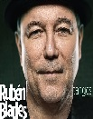
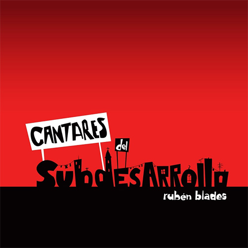
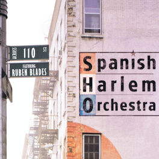
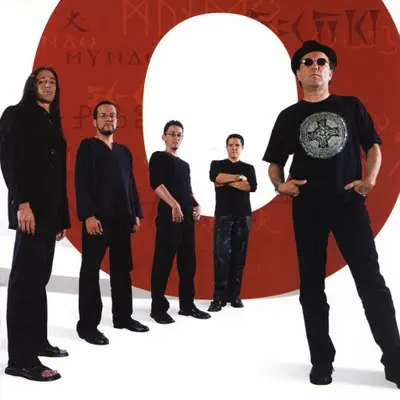
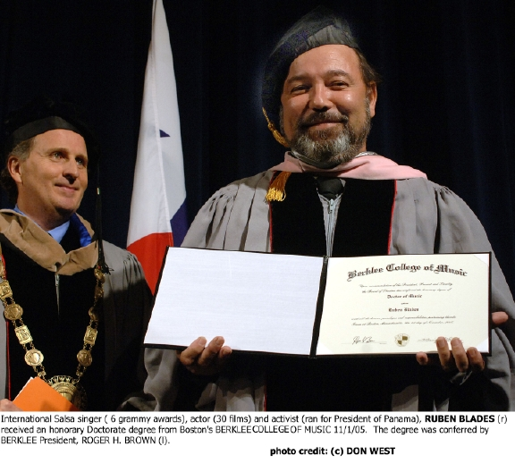
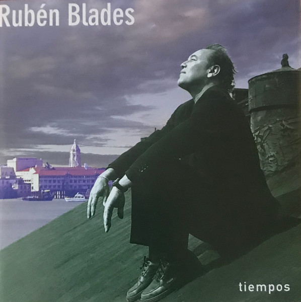
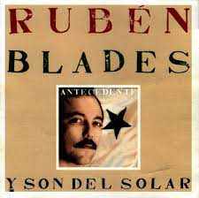

RUBEN
Rubén Blades Bellido de Luna nació el 16 de julio de 1948. Es un canta-autor, músico, actor, abogado y político panameño que desarrolló la mayor parte de su carrera en los Estados Unidos. Su estilo ha sido calificado como salsa intelectual.

Rubén Blades Bellido de Luna nació el 16 de julio de 1948. Es un canta-autor, músico, actor, abogado y político panameño que desarrolló la mayor parte de su carrera en los Estados Unidos. Su estilo ha sido calificado como salsa intelectual.
 |
2022 Grammy Best Tropical Latin Album SALSWING! |
 |
2021 Person of the Year/Persona del Año Academia Latina de Artes y Ciencias de la Grabación (Grammy Latino). |
|
2021 Grammy Latino Mejor Album del Año SALSWING! |
 |
2021 Grammy Latino Mejor Album del Salsa SALSA PLUS! |
 |
2020 Medalla de las Artes. Universidad de Harvard |
 |
2020 Grammy Latino Mejor Canción Tropical CANCION PARA RUBEN Rubén Blades y Carlos Vives |
 |
2018 Medalla de Oro al Mérito en las Bellas Artes. Ministerio de Cultura de España |
 |
2018 Grammy Best Tropical Latin Album SALSA BIG BAND |
|
2017 Grammy Latino Mejor Album del Año SALSA BIG BAND |
|
2017 Grammy Latino Mejor Album de Salsa SALSA BIG BAND |
 |
2016 Grammy Best Tropical Latin Album SON DE PANAMA |
|
2015 Grammy Latino Mejor Álbum de Salsa SON DE PANAMA |
|  | 2015 Grammy Best Pop Latin Album TANGOS |
| 2014 Grammy Latino Mejor Álbum de Tango TANGOS | |
 |
2011 Premio Herencia Hispana de las Artes Hispanic Heritage Foundation (Fundación de Herencia Hispánica) |
 |
2011 Raúl Juliá HOLA, Premio Fundadores. Organización Hispana de Actores Latinos (HOLA) |
 |
2011 Grammy Latino Mejor Álbum de Salsa TODOS VUELVEN LIVE VOL. 1 y 2 Rubén Blades & Seis Del Solar |
 |
2010 Premio My Hero. Organización Aid for Aids, por su labor, a lo largo de su carrera, en la lucha contra el SIDA. |
|  | 2010 Grammy Latino Mejor Álbum de Cantautor CANTARES DEL SUBDESARROLLO |
 |
2009 Grammy Best Latin Video LA PERLA Calle 13 (Eduardo Cabra, René Pérez) con Rubén Blades. |
 |
2008 Premio Bravo (Líder Innovador del Año) Revista Latin Trade. |
 |
2007 Premio Albatros, Personalidad Turística del Año. Confederación de Organizaciones Turísticas de la América Latina (COTAL) |
 |
2006 Medalla de Honor de Pablo Neruda. Gobierno de Chile. |
| 2005 Honorary Doctorate in Music, Berklee College of Music. Boston, Estados Unidos | |
 |
2005 Premio Fundadores. ASCAP (Sociedad Americana de Compositores, Autores y Editores) |
 |
2004 Imagen Foundation Award Mejor Actor Secundario ¨Once upon a Time in Mexico¨ |
|  | 2004 Grammy Best Salsa/Merengue Album ACROSS 110th STREET The Spanish Harlem Orchestra con Rubén Blades. |
|  | 2003 Grammy Latino Mejor Álbum de Música Tropical Contemporánea MUNDO |
 |
2003 Premio Héroes. Academia Nacional de Grabaciones Artísticas y Ciencias (NARAS) |
| 2002 Grammy Best World Music Album MUNDO | |
 |
2000 Embajador de las Naciones Unidas contra el Racismo. |
|  | 2000 Honorary degree Doctor of Humane Letters, Lehman College CUNY (City University of NY) New York, Estado Unidos |
|  | 1999 Grammy Best Pop Latin Album TIEMPOS |
 |
1996 Grammy Best Tropical Latin Album LA ROSA DE LOS VIENTOS |
 |
1989 Premio ACE de Televisión por Cable, Mejor Actor ¨Dead Man Out¨ |
 |
1995 Honorary Doctorate degrees from Berkeley University of California (Chicano Studies) |
|  | 1988 Grammy Best Tropical Latin Album ANTECEDENTE |
 |
1986 Grammy Best Tropical Latin Album ESCENAS |
Una de sus canciones más escuchadas